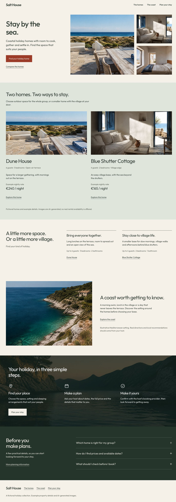

Six native pages, new coastal imagery and revised property layouts. Local draft for visual review.
Open the redesigned site · Customization guide · QA and limitations
Your four homepage comments are implemented: sage stays background and example prices, replacement comparison composition, photo-backed booking steps with native icons, and a split dark-olive FAQ. Full release acceptance and your final visual approval remain pending.
